Material · 01
Backlit Jade Onyx
The single slab at the end of the corridor, lit from behind so the veining reads. It reappears as the bar counter and the stair treads — nowhere else.
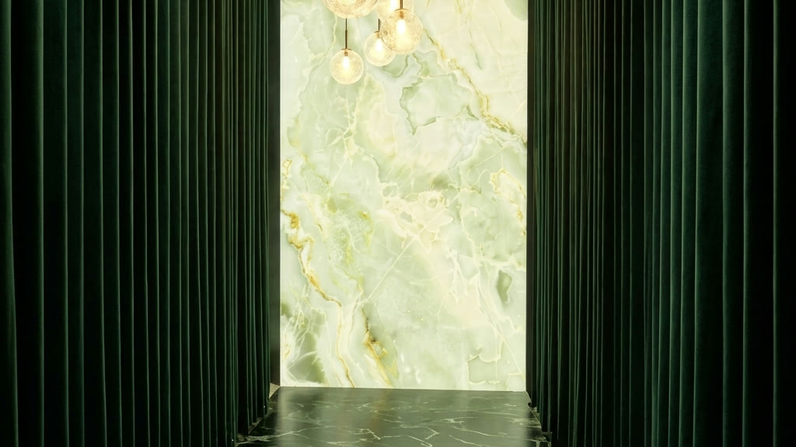
Dinner, music and the long part of the night. Bonifacio Global City, Manila — with chef partner Todd English.
Thirty-eight pages, five parts — the house, the table, the craft behind the room, the invitation, and the investment.
How to use this kit: every room, menu section and price in these pages reflects the house as of July 2026. High-resolution versions of all photography — and the full printed menu — are available for editorial use; see Press Assets, page 37.
A green velvet corridor, a lit slab of onyx, and a room that does not tell you what time it is.
Jade Supper Club · Media Kit 2026 · 03/38Manila has always known how to stay up late. What it did not have was one room that could hold the whole night — dinner worth dressing for, a band worth staying for, and a bar that is still pouring when the kitchen has gone quiet. Jade was built to be that room.
It begins as a corridor. Green velvet on both sides, brass underfoot, and at the end a single slab of backlit jade onyx that glows like a held breath. You do not see the dining room until you are inside it — and then it opens: a double-height space in deep emerald and warm brass, banquettes running the long wall, a proscenium stage at the far end, and a spiral staircase in polished brass climbing to a mezzanine that looks down on all of it.
The cooking is fire-led and Manila-anchored: a wood oven at the centre of the kitchen, an ice bar for the raw list, Philippine seafood and Japanese precision meeting Mediterranean technique. The menu was developed in partnership with chef Todd English, whose five James Beard Awards and thirty-five years of wood-fired cooking sit behind the pass — his first fine-dining room in the Philippines.
“A supper club is not a restaurant with a band. It is one evening, written in three acts, and the food is only the first.”
Jade Supper Club

“The room has no clock and no windows. That is not an accident — it is the entire design brief.”
The corridor lights come up. First seating in the Grand Room; the ice bar is dressed and the oven is at temperature.
Oysters, crudo and hand rolls off the raw list. A pianist plays the room quietly — no vocal yet.
The wood oven runs flat out. Whole lapu-lapu, dry-aged ribeye and the flatbread that started it all.
The proscenium curtain opens. Forty-five minutes — jazz-leaning, with a vocalist, mixed live for the whole floor.
The room turns. Later tables arrive dressed for the music rather than the menu; the bar takes over the front.
Louder, later, closer to the floor. The mezzanine fills; the spiral staircase becomes the best seat in the house.
Last order from the full menu. Bar bites — the Jade Dragon, Midnight in Manila — run until the end.
Lights down two stops. Resident DJ, sake carafes, and the part of the night the regulars come for.
The brass panels dim one at a time. The corridor is the last thing you see, exactly as it was the first.
Luxury is not the marble. It is the fact that nobody has asked you to leave.
The house rule at Jade Supper Club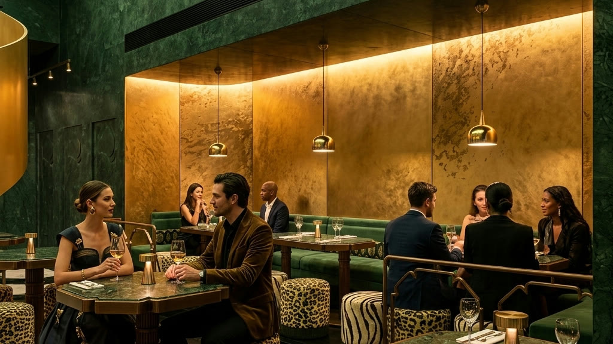
The banquette run — the long wall of the Grand Room, built for parties that grow as the night does.
A wood oven at the centre of the kitchen. Char, smoke and salt before anything else.
No turn-and-burn. The room is designed to be held, not flipped — three acts, one table.
Philippine seafood, Philippine produce, Philippine musicians. The technique travels; the sourcing does not.
Light, sound and spacing are plated as carefully as the food. A table is a seat in a theatre, not a slot in a service.
Whole fish carved, pasta finished, drinks stirred in front of you. If it can be done in the room, it is not done in the kitchen.
Dress how you like. The only entry requirement is that you intend to stay for the whole night.
The wood oven, the ice bar and the brass counter — the full menu, as printed.
Jade Supper Club · Media Kit 2026 · 08/38No. 01 — The Brass Counter · Front of House
No. 02 — The Cold Room · Sake, Champagne & Late Bites
No. 03 — The Pass · Open to the Grand Room
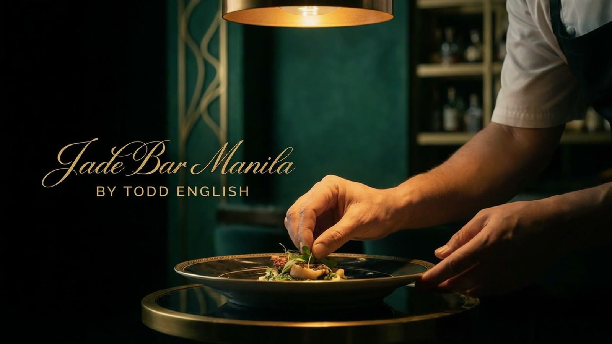
Venue PhotographyEverything at Jade is organised around one piece of equipment. The oven runs at 400°C from four in the afternoon until midnight and never fully cools — bread in the early evening, whole fish and dry-aged beef at peak, focaccia for the bar when the dining room has gone.
The technique is chef English's: fire, salt, time, and nothing hidden behind a sauce. The sourcing is Manila's — lapu-lapu from Palawan boats, Cebu oysters, Ilocos garlic, Batangas coffee in the dessert. Japanese precision sits on top of it: the ice bar, the sake list, the uni.
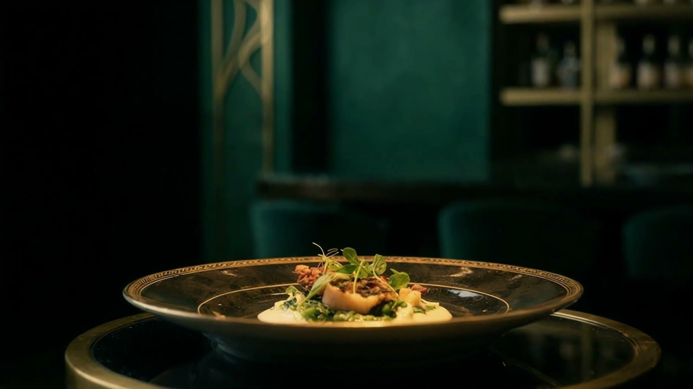
Venue PhotographyNo. 04 — The Proscenium · Far End of the Grand Room
A full proscenium with a working curtain, sightlines from every banquette, and a room tuned so that a vocalist can be heard at the back without a table having to stop talking. Two sets a night — 9PM and 11PM — jazz-leaning early, looser and later after midnight.
The programme is Filipino-first: resident trio, rotating vocalists, and a monthly guest night that pulls from Manila's session players. The stage is also the reason the room works for takeovers — it is built for a set, not for background music.
 Venue Render
Venue RenderNo. 05 — The Brass Spiral · Grand Room to Mezzanine
The single most photographed object in the house: a polished brass spiral rising through the double-height volume against a wall of backlit brass panels. It is structural, but it is also the room's clock — you can read how late it is by how many people are standing on it.
At the top, the mezzanine: twenty-four seats on the rail, looking down the length of the Grand Room to the stage. It books first and it books furthest ahead.
 Venue Render
Venue RenderSelected plates from the current menu. High-resolution files of every photograph are available for editorial use.
“Fire, salt, time. If you can taste the technique, we have overcooked it.”
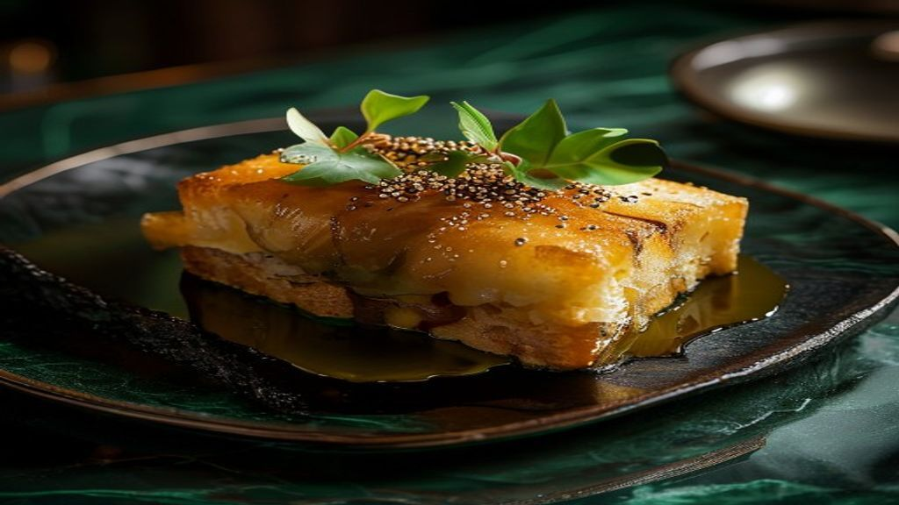
AI Render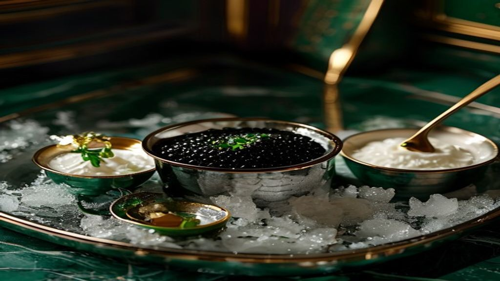
AI Render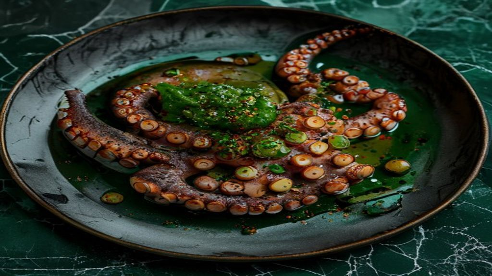
AI Render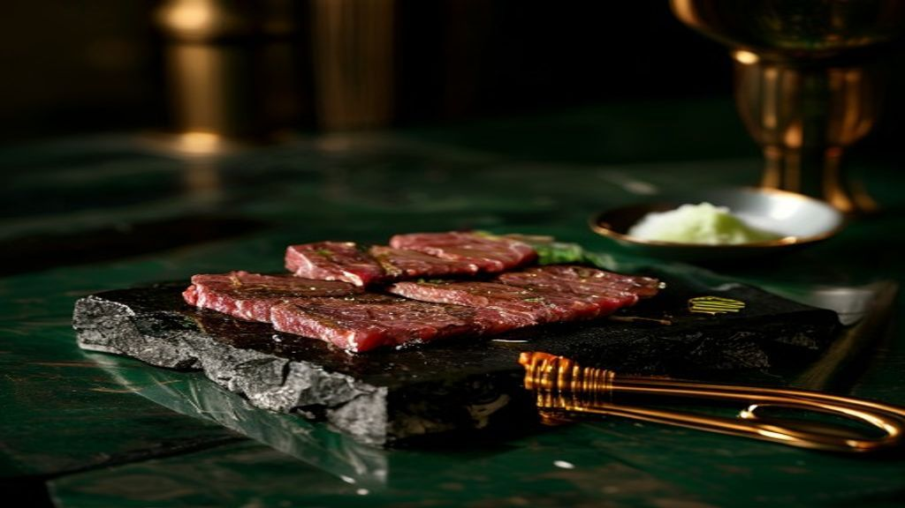
AI Render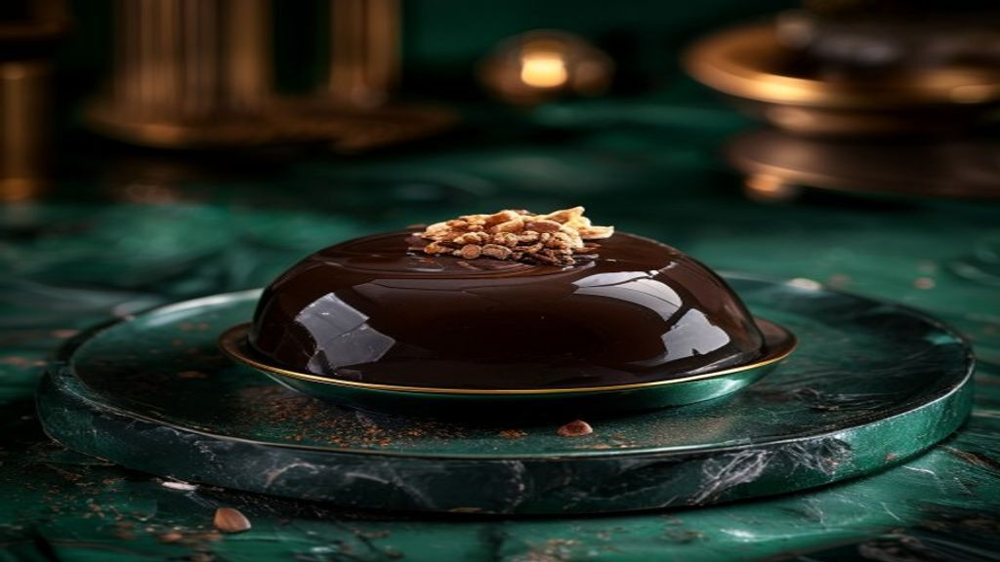
AI RenderSix rooms, one material palette — emerald, brass, onyx and velvet, from the corridor to the cellar.
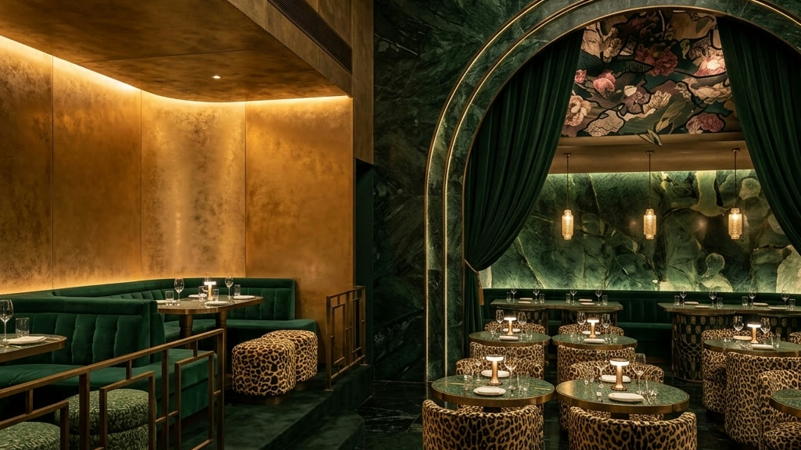
Venue RenderThe Grand Room, laid and lit an hour before doors — the only quiet it gets.
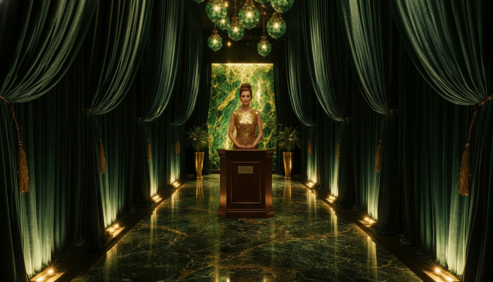
Venue Render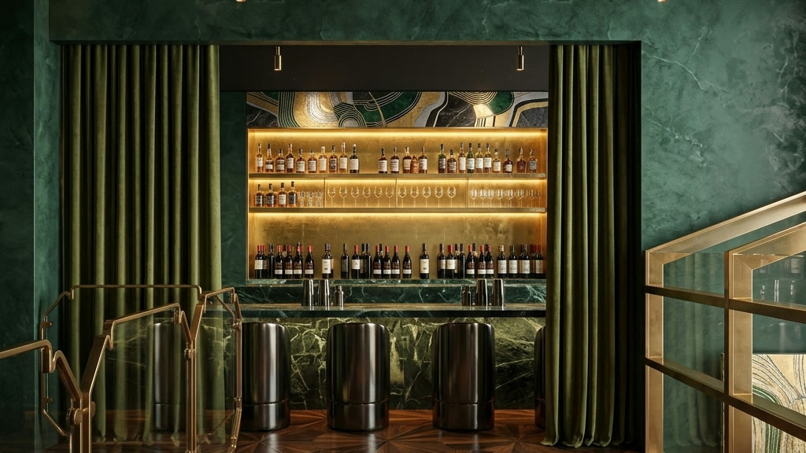
Venue Render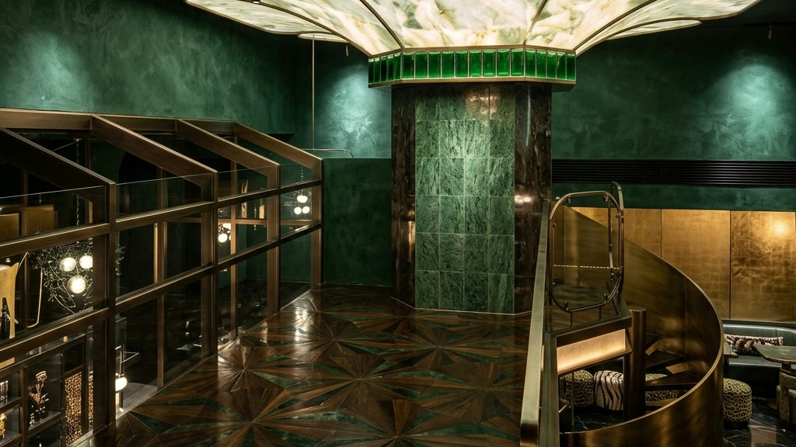
Venue Render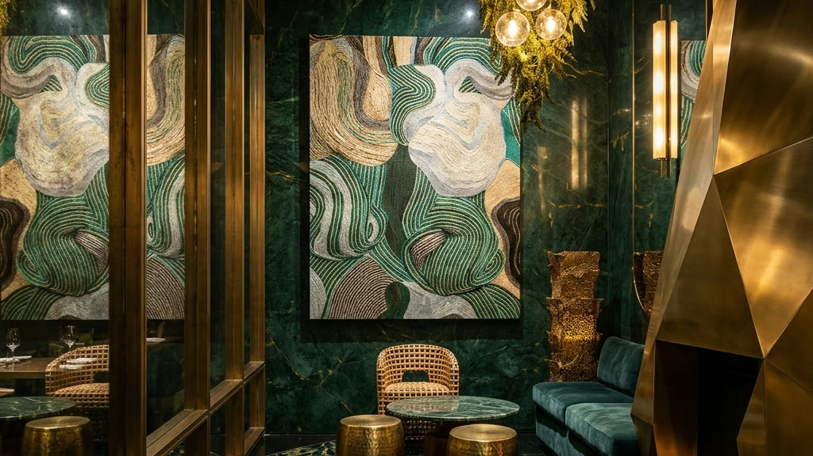
Venue Render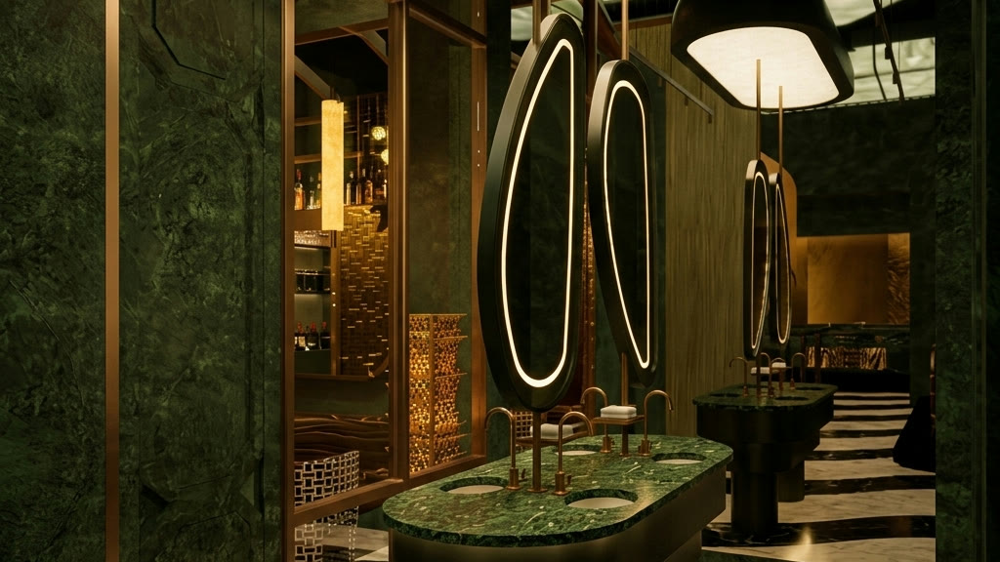
Venue Render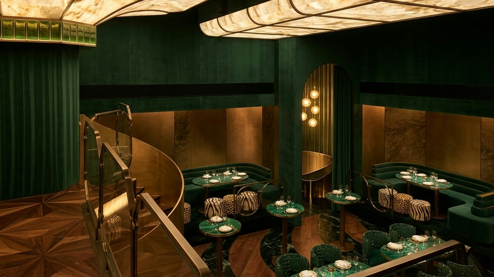
Venue RenderThe materials, the chef partner, the cellar and the music — everything behind the room.
Jade Supper Club · Media Kit 2026 · 18/38Four materials, used everywhere and mixed nowhere else. This is the whole palette.
The single slab at the end of the corridor, lit from behind so the veining reads. It reappears as the bar counter and the stair treads — nowhere else.
Ribbed brass panels, backlit at a fixed warmth, run the full height of the atrium. They are the room's only light source above eye level.
Deep cool green — never warm, never yellow. Banquettes, drapery, the corridor walls and the stage curtain, all cut from one dye lot.
The floor. It reflects the brass and doubles the height of the room — the reason photographs of Jade always look taller than the space is.
“Every surface in the room is one of four things. The discipline is what makes it feel expensive.”
The menu at Jade was developed in partnership with chef Todd English — his first fine-dining room in the Philippines.
Todd English trained under Jean-Jacques Rachou at La Côte Basque, then left for Italy and came back with rustic Mediterranean food cooked over fire. Olives opened in Charlestown in 1989 with fifty seats and a wood oven. Five James Beard Awards followed, along with fifteen cookbooks and restaurants on four continents.
Jade is the first fine-dining room in the Philippines to carry his hand on the menu. The wood oven, the whole-fish service and the guéridon are his grammar, rewritten for Manila's produce. The kitchen is run day to day by its own resident brigade; Chef English sets the menu, returns for each seasonal change, and cooks the opening service himself.
Built into the centre of the Jade pass, not hidden behind it. Flatbread, whole fish and the short rib all pass through the fire.
The rolling table he brought back from France — pasta finished, fish carved, sauces mounted in front of the guest.
The grammar is his; the ingredients are not. Lapu-lapu, calamansi, Batangas barako and Philippine oysters replace the Mediterranean originals.
The partnership, in the model: chef travel is budgeted at ₱300,000 a year for the seasonal menu changes and the opening service. The resident brigade — a head chef, a sous chef, a sushi chef and eight line cooks — carries the room every other night of the year.
A cold room built for sake first and wine second — the reverse of every other list in the city.


For sommeliers & press: the full sake list — including allocated daiginjo and single-cask whisky held off-menu — is available on request, along with tasting notes from the cellar team. Corkage is ₱2,500 per bottle, two bottles maximum.
Two sets a night, seven nights a week — programmed Filipino-first, and loud enough to matter.
Venue Render
Nine o'clock and eleven o'clock — the two moments the whole room is pointed the same way.
9:00 PM
Forty-five minutes, jazz-leaning, resident trio with a vocalist. Mixed for a room that is still eating.
11:00 PM
Later, looser, closer to the floor — soul, bossa, and the occasional standard taken sideways.
First Friday
A monthly seat handed to Manila's session players and touring vocalists. One night, one set, no repeat.
For bookers & artists: Jade programmes its own stage and does not take pay-to-play. Artist submissions, technical riders and stage plots go through the venue directly. The room is available for label showcases and album launches on Monday, the one night the house is dark.
Private dining, buyouts, the late room — and how to get in touch.
Jade Supper Club · Media Kit 2026 · 23/38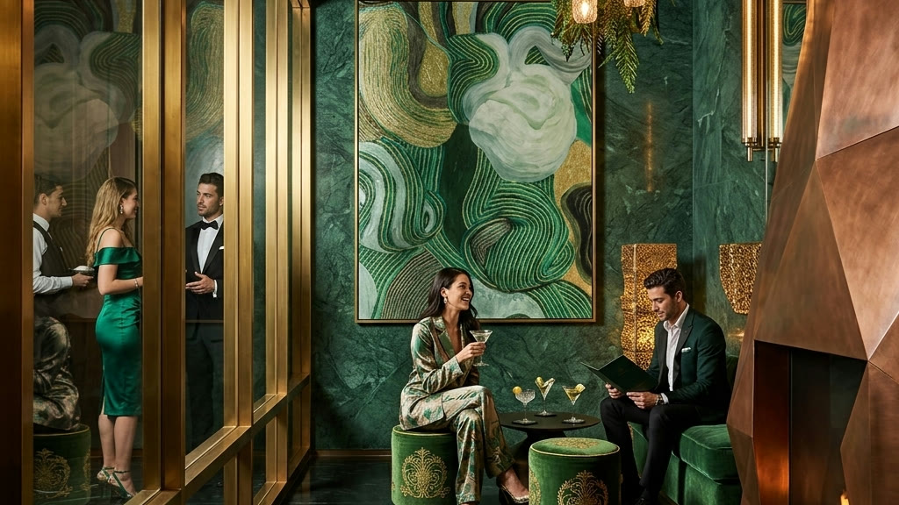
Venue RenderBookable Now · Eighteen Seats
A closed room off the Grand Room — one table for eighteen, its own service team, and a door that shuts. The full menu, the tasting, or something written for the occasion. Sound from the stage carries in at half volume, by design.
18 seats · Own service team · Full menu or bespokeVenue RenderEvery room, the stage, the bar and the kitchen for one night. Seventy-seven seated across all seven bookable areas, with standing room on the mezzanine rail and along the bar, and the music programme built to the brief.
77 seated · whole houseAlso available: chef's table at the pass, six seats · corporate long-table service in the Grand Room · pre-theatre seating from 6PM · in-house photography and content capture for partners, on request.
Bookable Now — Off the Grand Room · Eighteen Seats
One table, eighteen chairs, and a door — the quietest room in a house built to be loud.
The Salon is the house's argument that privacy and atmosphere are not opposites. It sits directly off the Grand Room, sharing its palette and its acoustics — the stage carries in at half volume, so a dinner here still feels like it is happening inside the night rather than beside it.
Service is dedicated: its own captain, its own sommelier, its own pass. Menus are written per booking — the printed carte, the seven-course tasting, or something built around whatever the boats brought in that morning.
Midnight to 2AM — The Bar, The Spiral & The Mezzanine
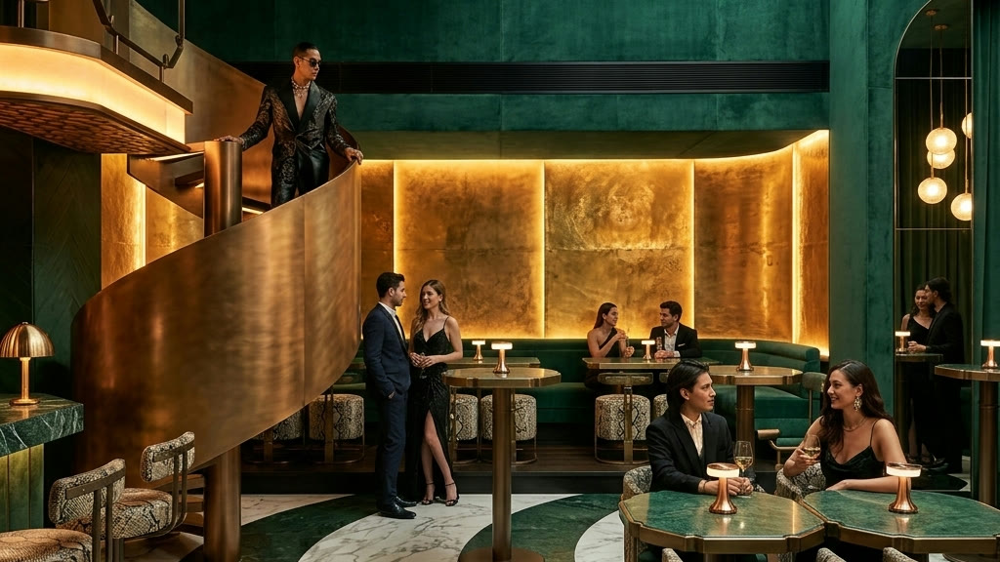
Venue RenderAfter midnight the dining room becomes a different venue — same brass, two stops darker.
At midnight the kitchen closes the carte and the house changes shape. Lights drop two stops, the tables along the banquette run are cleared to standing, the resident DJ takes the stage, and the bar becomes the centre of gravity. The only food is bar bites — the Jade Dragon, Midnight in Manila, focaccia straight out of the cooling oven.
It is the part of the night the regulars book for, and the reason Jade is a supper club rather than a restaurant: nobody is asked to leave until two.
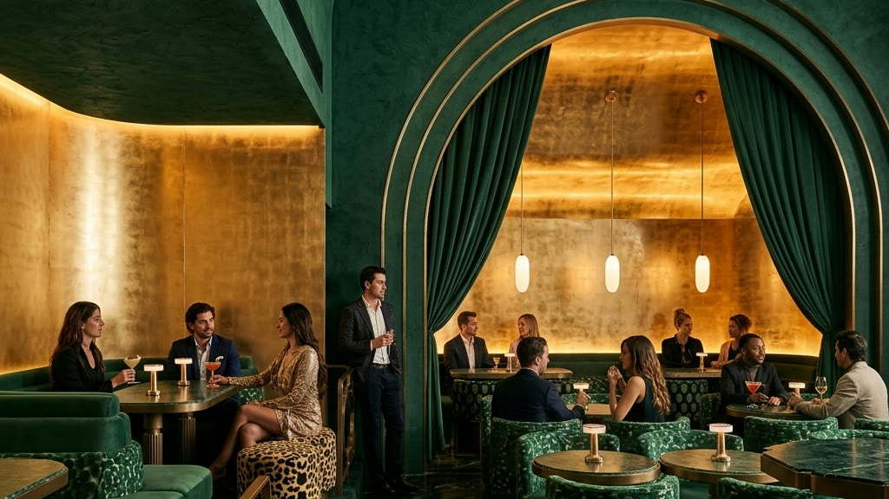
Venue RenderThe Salon, the Mezzanine or the full house — with a menu written to the brief and the stage programmed around it.
A working proscenium with a full rig, dark Mondays, and a room already trained to face the stage. No pay-to-play.
Shoot access to all six rooms outside service hours, in-house capture for partners, and the full asset library on page 37.
For press: high-resolution imagery, the printed menu, room dimensions, capacity sheets and interview requests are available directly from Jade Supper Club, Bonifacio Global City.
The Dining Room
Centre tables and the chef's table at the pass, at ₱4,000 a head. Two seatings a night, 6PM and 10PM.
The Banquettes
Two at six and two at eight to ten, each on a minimum spend. The run that faces the stage.
Counter & Private
Four to five at the sushi counter; six to twelve behind the Salon door. The bar counter is walk-in and unreserved.
Tuesday–Sunday · Doors 6PM · Kitchen until midnight · Bar until 2AM · Sets at 9PM & 11PM · Dark Mondays
Full house, second set — the room the whole building was designed around.
For planners: room dimensions, floor plans, rigging points, power and load-in details are available as a capacity pack on request. Figures current as of July 2026.
A ₱40 million build, a ₱13 million ticket, and a room designed to earn its keep from the first Saturday.
Jade Supper Club · Media Kit 2026 · 29/38Three months of advance rent and three months of security deposit — ₱3,373,966 — are placed with the landlord. Design is set with BA8 Concepts, Jerikson Construction is on site, and the mezzanine is with the structural engineer for sign-off.
Permits and licences at ₱400,000 are lodged, and the point-of-sale goes in for BIR accreditation — a fixed three-to-four-week clock that gates opening day more tightly than the build does. Fire suppression, smoke detection and air conditioning are coordinated with building management.
Automated lighting, exhaust and ducting, CCTV and biometrics. The cold line, the hot line and the Josper charcoal oven are delivered and wired. Custom furniture installation begins, and the bar's ice cap goes in.
Kitchenware, bar and glassware at ₱1,100,000. Hiring closes on the forty-four-strong opening roster and one month of paid training begins at ₱1,135,960. Menu R&D runs against ₱6,000,000 of opening stock. Plants and soft finishes land last.
Friends and family, then press, then full service — Tuesday to Sunday, two seatings at 6PM and 10PM, bar until 2AM.
Year One is modelled at ₱76.9M in the base case and ₱130.7M in the high case, against a 72% gross margin.
Nine phases from shell to handover. Site photography drops into these frames as each phase is shot — the schedule and the captions are live; only the images are pending.
Site access: walkthroughs are arranged for prospective investors on request, and a dated photo set is issued at the close of each phase.
The same five-year model, run twice — once on conservative trade, once on the room performing to the capacity it was built for.
The Ticket
An 18% holding in the operating company, drawn against a total project cost of ₱40,083,352.
The Policy
Ninety per cent of net profit is paid out annually. The remaining tenth is retained against ongoing capex, budgeted at 2% of revenue.
The Horizon
Modelled to Year Five on a ten-year leasehold life, with the base case paying back in 3.6 years and the high case in 1.7.
| Base Case | High Case | |
|---|---|---|
| Year 1 Revenue | ₱76,928,570 | ₱130,714,280 |
| Year 5 Revenue | ₱126,119,774 | ₱218,531,270 |
| Year 1 Gross Margin | 72.1% | 72.4% |
| Year 1 EBITDA | ₱26,367,504 | ₱62,547,772 |
| Year 1 EBITDA Margin | 34.3% | 47.9% |
| Year 1 Net Profit | ₱17,178,614 | ₱43,952,013 |
| Year 5 Net Profit | ₱33,553,232 | ₱80,110,688 |
| Five-Year Distributions, 18% Holder | ₱20,477,536 | ₱49,709,054 |
| Cumulative Return on ₱13M | 57.5% | 282.4% |
| Payback Period | 3.58 years | 1.72 years |
| Internal Rate of Return | 15.23% | 60.30% |
A note on the two cases. The base case assumes the house turns roughly one full cover a night across a six-day week. The high case assumes nightlife revenue matching dining rather than trailing it. Neither assumes a price increase. Full model available under NDA.
Depreciation: ₱3,153,160 a year — ₱1,719,525 on ₱17,195,251 of leasehold improvements over ten years, ₱1,433,635 on ₱7,168,175 of equipment over five. Net book value at the end of Year Five is ₱8,597,625. Ongoing improvement capex is budgeted at 2% of revenue.
In millions of pesos. Two rooms, two revenue lines — dinner service and the late half of the night — modelled separately and summed.
| Yr 1 | Yr 2 | Yr 3 | Yr 4 | Yr 5 | |
|---|---|---|---|---|---|
| Dining | 42.3 | 50.8 | 58.4 | 64.2 | 69.4 |
| Nightlife | 34.6 | 41.5 | 47.8 | 52.5 | 56.8 |
| Total Revenue | 76.9 | 92.3 | 106.2 | 116.8 | 126.1 |
| Revenue Growth | — | +20.0% | +15.0% | +10.0% | +8.0% |
| Cost of Sales | 21.4 | 25.7 | 29.6 | 32.5 | 35.1 |
| Gross Margin | 55.5 | 66.6 | 76.6 | 84.2 | 91.0 |
| Operating Expenses | 29.1 | 36.7 | 38.5 | 40.5 | 42.5 |
| EBITDA | 26.4 | 29.9 | 38.0 | 43.8 | 48.5 |
| EBITDA Margin | 34.3% | 32.4% | 35.8% | 37.5% | 38.5% |
| Net Profit | 17.2 | 19.8 | 25.8 | 30.1 | 33.6 |
| Net Margin | 22.3% | 21.4% | 24.3% | 25.7% | 26.6% |
| Yr 1 | Yr 2 | Yr 3 | Yr 4 | Yr 5 | |
|---|---|---|---|---|---|
| Dining | 65.4 | 77.1 | 88.7 | 99.3 | 109.3 |
| Nightlife | 65.4 | 77.1 | 88.7 | 99.3 | 109.3 |
| Total Revenue | 130.7 | 154.2 | 177.4 | 198.7 | 218.5 |
| Revenue Growth | — | +18.0% | +15.0% | +12.0% | +10.0% |
| Cost of Sales | 36.1 | 42.6 | 49.0 | 54.8 | 60.3 |
| Gross Margin | 94.6 | 111.7 | 128.4 | 143.8 | 158.2 |
| Operating Expenses | 32.1 | 40.4 | 42.5 | 44.6 | 46.8 |
| EBITDA | 62.5 | 71.2 | 86.0 | 99.3 | 111.4 |
| EBITDA Margin | 47.8% | 46.2% | 48.5% | 50.0% | 51.0% |
| Net Profit | 44.0 | 50.4 | 61.3 | 71.1 | 80.1 |
| Net Margin | 33.6% | 32.7% | 34.6% | 35.8% | 36.7% |
Cost of sales runs at 27.9% in the base case and 27.6% in the high, for a gross margin of roughly 72% in both. Corporation tax is taken at 26%. Depreciation of ₱3,153,160 a year is charged below EBITDA; the model carries no debt and no interest.
An 18% holding, distributions paid annually out of net profit. Both cases below are drawn from the same model as the forecast on the previous page.
| Net Profit | Distributed | 18% Share | ROI | Cumulative | |
|---|---|---|---|---|---|
| Year 0 | — | — | (13,000,000) | — | (13,000,000) |
| Year 1 | 17.2M | 15.5M | 2,782,936 | 21.4% | (10,217,064) |
| Year 2 | 19.8M | 17.8M | 3,205,605 | 24.7% | (7,011,459) |
| Year 3 | 25.8M | 23.2M | 4,183,133 | 32.2% | (2,828,326) |
| Year 4 | 30.1M | 27.1M | 4,870,239 | 37.5% | 2,041,913 |
| Year 5 | 33.6M | 30.2M | 5,435,624 | 41.8% | 7,477,536 |
| Five Years | 20,477,536 | 57.5% | 7,477,536 |
| Net Profit | Distributed | 18% Share | ROI | Cumulative | |
|---|---|---|---|---|---|
| Year 0 | — | — | (13,000,000) | — | (13,000,000) |
| Year 1 | 44.0M | 39.6M | 7,120,226 | 54.8% | (5,879,774) |
| Year 2 | 50.4M | 45.3M | 8,162,157 | 62.8% | 2,282,383 |
| Year 3 | 61.3M | 55.2M | 9,927,887 | 76.4% | 12,210,270 |
| Year 4 | 71.1M | 64.0M | 11,520,852 | 88.6% | 23,731,122 |
| Year 5 | 80.1M | 72.1M | 12,977,932 | 99.8% | 36,709,054 |
| Five Years | 49,709,054 | 282.4% | 36,709,054 |
Distribution Policy
Paid annually. The remaining tenth is retained for ongoing improvement capex, budgeted at 2% of revenue.
Cumulative Return
₱20,477,536 returned on ₱13,000,000 over five years, with the holding intact at the end of it.
Cumulative Return
₱49,709,054 on the same ₱13,000,000, if the room trades closer to a full house on a Friday and Saturday.
Figures in parentheses are cash out. Distribution is 90% of net profit, paid annually. The base case crosses into positive cumulative cash during Year Four; the high case crosses during Year Two.
Every area in the house is sold on a minimum spend rather than a cover charge. Filled once, the room takes ₱262,000 in a night.
| Seats | Minimum Spend | |
|---|---|---|
| Private Dining Room | 6–12 | ₱50,000 |
| Omakase Counter | 4–5 | ₱30,000 |
| Banquette Three | 8–10 | ₱20,000 |
| Banquette Four | 8–10 | ₱20,000 |
| Banquette One | 6 | ₱15,000 |
| Banquette Two | 6 | ₱15,000 |
| Dining Room, ₱4,000 a head | 28 | ₱112,000 |
| One Cover | 77 | ₱262,000 |
What the Base Case Asks
Year One revenue over 312 trading nights is one full cover of the house — before the second seating, before the bar, before a single buyout.
Gross Margin
Cost of sales at 27.9%. A supper club sells a room and a night, not only plates — which is what holds the margin above a restaurant's.
The Payroll
₱1,362,100 a month across kitchen, floor and bar, rising to 48 in the high case. The largest single line in operating expense.
The rest of the operating line: rent at ₱4.5 million in Year One on 180 sqm, a 5% revenue share, ₱600,000 a month for talent — DJs and live sets — ₱205,000 in professional services, ₱198,000 in staff benefits, ₱50,000 in marketing, and roughly ₱219,000 in utilities, internet and storage.
Everything in this kit — and more — is available in high resolution on request.
The corridor — the house's signature image.
All six rooms, the bar, the stage and every plate on the current menu — in print resolution.
The full carte and bar list as printed, plus the seven-course tasting and pairing notes.
Floor plans, room dimensions, rigging points, power and load-in for every bookable space.
Kitchen and cellar interviews, chef-partner requests, and shoot access outside service hours.
Logo usage, partnership announcements and co-branded creative, reviewed by the house.
Usage & provenance: imagery is released for editorial coverage of Jade Supper Club. Images marked AI Render are design and menu visualisations, not documentary photography, and must carry that credit if reproduced. Commercial use requires written approval from the house.
Reach Out
Bonifacio Global City · Taguig · Metro Manila
Tuesday–Sunday · Doors 6PM · Bar until 2AM
Reservations, private dining & press inquiries via the house
Produced July 2026 · All rooms, menus and capacities current at time of publication · 38/38